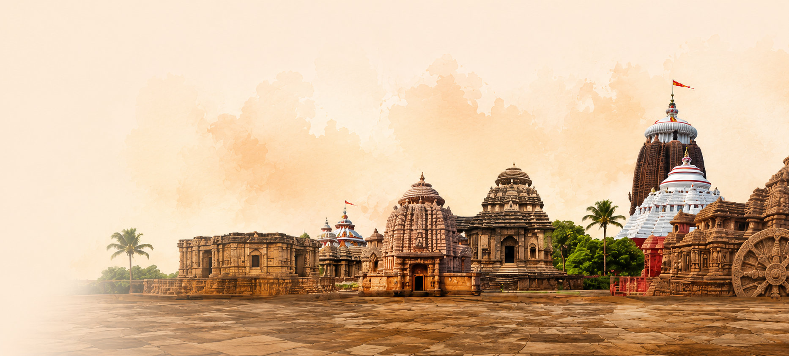
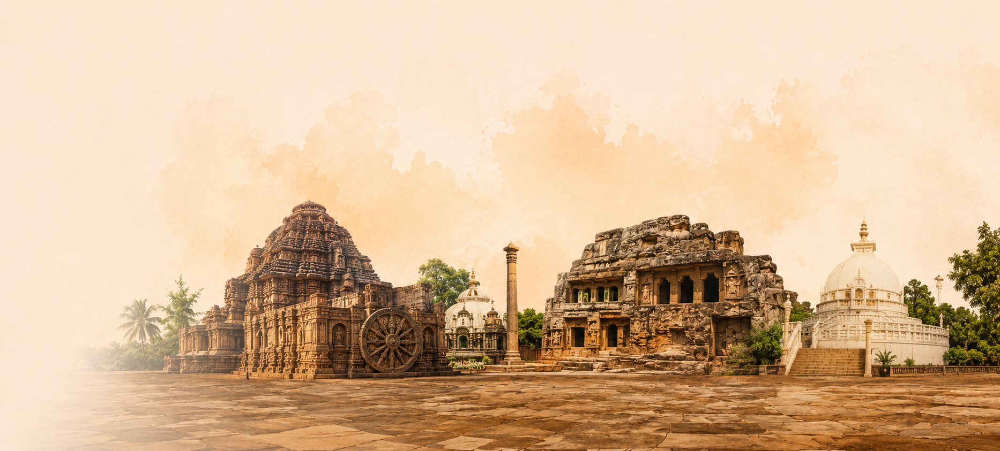
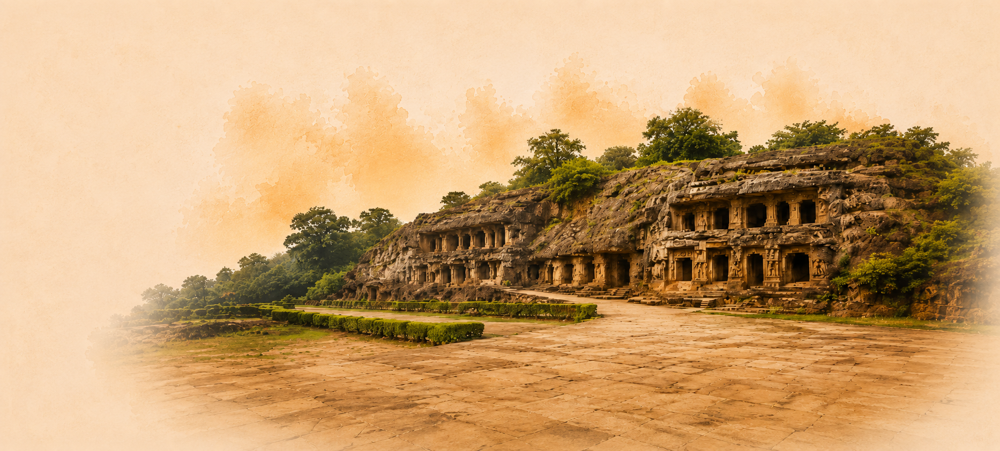
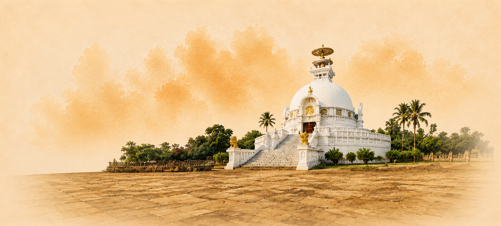

Who We Are
Explore More
About Us
Odisha Paribar is committed to building a strong global community of Odias, working together for the progress and prosperity of Odisha. We bridge the gap between the Odia diaspora and the homeland.
From investment opportunities to cultural exchange programs, Odisha Paribar is your gateway to staying connected with the roots that define us — wherever in the world you are.
Rich Heritage of Odisha
0Members
0Countries
0Events


CM Majhi Meets PM Modi
YouTube
Odisha Pravasi Connect
YouTube
Odisha Heritage Festival
YouTube
Pravasi Odia Global Summit
YouTube
Odisha Investment Meet
YouTube
Cultural Connect 2025
YouTube


Social & Latest News
Proud moment as Odias across the world come together for a better tomorrow. #OdishaParibar #GlobalOdia

Odisha Diaspora Summit 2025 registrations are now open! Join thousands of Odias globally to celebrate culture, connect and collaborate. #OdishaSummit2025

Celebrating the rich tradition of Odissi dance with our cultural program in London last weekend. #OdissiDance #OdiaHeritage

The Odisha Pravasi Portal is live! Register now and be part of the largest Odia diaspora network in the world. 🙏🏽 #OdishaParibar #NRI #NRO
CM Mohan Charan Majhi meets Odia diaspora leaders in New Delhi to discuss key investment and welfare initiatives. 🏛️ #Odisha #CM

Odisha's GDP growth rate of 8.2% is among the highest in India. Proud of our state's progress! 📈 #OdishaGrowth
LIVE: Odisha Diaspora Meet 2025 — Full Coverage. Watch as leaders from 40+ countries gather in Bhubaneswar.
Odisha Pravasi Connect: Stories from the diaspora — How Odias are making a difference across the globe.
Odisha Diaspora Summit 2025 Registrations Now Open for Global Odias
The annual summit brings together Odia professionals, entrepreneurs and cultural leaders from across the globe to Bhubaneswar.
The Odisha Diaspora Summit 2025 will be held from July 15–17 at the KIIT Convention Centre, Bhubaneswar. Over 3,000 delegates from 50+ countries are expected to attend. Key themes include investment, cultural preservation, and youth leadership. Chief Minister Mohan Charan Majhi will inaugurate the event. Early bird registration closes on June 30.
CM Majhi Launches New NRO Welfare Scheme Worth ₹500 Crore
The scheme aims to support Non-Resident Odias in legal, medical and financial matters while they are abroad.
Chief Minister Mohan Charan Majhi announced a comprehensive welfare package for Non-Resident Odias covering legal assistance, health insurance, emergency repatriation support and investment facilitation. The ₹500 crore fund will be managed by the Odisha Pravasi Bhawan Trust.
Odissi Dance Festival Draws Record Audiences in London and New York
The cultural tour featured 12 leading Odissi artists performing to packed halls across Europe and North America.
The Odissi World Tour 2025, organized by Odisha Paribar's cultural wing, visited 8 cities across UK, USA and Canada. Over 15,000 audience members attended the performances. The tour also held workshops on Odissi basics for second-generation diaspora youth.
Odisha Invites Diaspora Investment in Semiconductor and Green Energy Sector
The state government is offering special incentives for Odia diaspora investors in priority sectors under the 2025 industrial policy.
The Odisha Industrial Promotion Authority has launched a dedicated diaspora investment window offering land allotment, single-window clearance, and a 10-year tax holiday for NRO/NRI investors in semiconductor, green hydrogen, and IT sectors.
Scholarship Program for Odia Students Abroad Extended to 500 New Beneficiaries
The Odisha government's flagship scholarship now covers tuition, living expenses and mentorship for deserving Odia students worldwide.
The expanded Odisha Pravasi Scholarship will now support 500 additional students studying at top 200 global universities. Applications open July 1, 2025. Priority given to students in medicine, engineering, law, and public policy.
New Odia Association Chapters Registered in Tokyo, Zurich and Toronto
Odisha Paribar officially recognises three new diaspora chapters bringing the total to 453 associations across 78 countries.
The three new chapters — Odia Society of Japan, Swiss Odia Paribar, and Toronto Odia Association — were formally registered at a ceremony in Bhubaneswar. Each chapter will run cultural, welfare and networking programs for local Odia communities.
UNESCO Recognizes Odisha's Pattachitra Art as Intangible Cultural Heritage
The ancient scroll painting tradition of Odisha receives global recognition, boosting artisan livelihoods and tourism.
UNESCO's World Heritage Committee added Pattachitra to its list of Intangible Cultural Heritage in Need of Urgent Safeguarding. Over 30,000 artists in Raghurajpur and surrounding villages stand to benefit from increased global visibility and export demand.
Rath Yatra 2025 to Be Celebrated Simultaneously in 200 Cities Worldwide
Odia associations across six continents will hold synchronised Rath Yatra processions in coordination with Puri's grand chariot festival.
Coordinated by Odisha Paribar's events committee, the Global Rath Yatra 2025 will feature mini chariots, cultural programs and live-stream connections with the Puri procession. Cities include New York, London, Singapore, Dubai, Sydney and Nairobi.